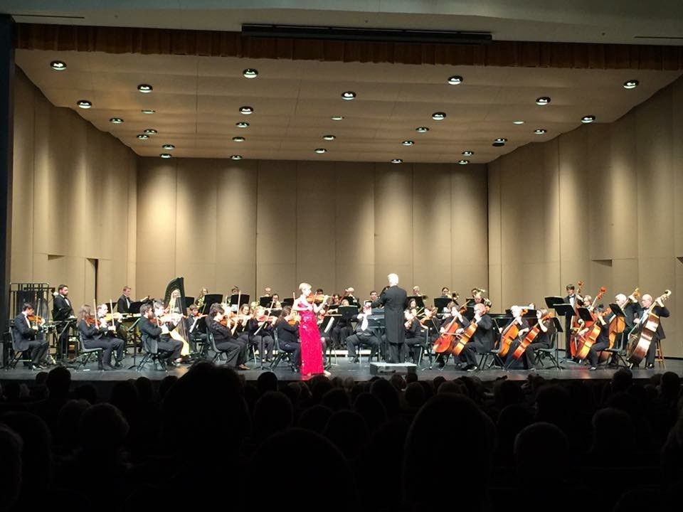

Multimedia
Presentations

Here, I am giving my "Dissertation" talk at the AAS 221st Meeting, 6-10 January 2013, in Long Beach, CA.
- Davis, B. L., "Black Hole Mass Scaling Relations for Spiral Galaxies," Astrophysics Colloquium: The University of Melbourne, September 19, 2018.
- Davis, B. L., "Black Hole Mass Scaling Relations for Spiral Galaxies Determined from Pitch Angles and Multicomponent Structural Decompositions," Galactic Rings: Signposts of Secular Evolution in Disk Galaxies, May 27, 2018.
- PowerPoint Slides →

- Video (starts at 3:49:30)
Commerically Available Music
- "Sonora Lac" by Yume, arranged by Amos Chochran - Ben Davis, viola (2015)
- "Gold" by Katie Danielson, arranged by Amos Chochran - Ben Davis, violin and viola (2013)
Live Performances
Arkansas Philharmonic Orchestra (February 14, 2016)
- Florence Price / Violin Concerto no. 2 - Arkansas Philharmonic Orchestra (2018)
- Florence Price / Violin Concerto no. 2 / another excerpt Arkansas Philharmonic Orchestra (2018)
- Florence Price / Violin Concerto no. 2 / short excerpt Arkansas Philharmonic Orchestra (2018)
- excerpts Brahms Double Concerto with USO (2016)
- Appalachian Spring for 13 Player - Aaron Copeland - University of Arkansas (2016)
- Mozart Duo for Violin and Viola in B-flat Major, K. 424 - Arkansas Philharmonic Orchestra Fundraiser - Andrew Chu, Violin; Ben Davis, viola (circa 2015)
- "Flares of Long Duration" by Ryan Cockerham - Arkansas Philharmonic Orchestra Fundraiser - Er-Gene Kahng, Drew Irwin, Ryan Cockerham, Andrew Chu, and Ben Davis (circa 2015)
- The Simultaneous Orgasm Spoken Word Show (April 2015)
- Butterfly (excerpt) - Kharjanovsky / Schnittke (arr. by Ryan Cockerham), Crystal Bridges Museum of American Art, Bentonville, AR (2014)
- Andrej Kharjanovsky / Alfred Schnittke - “The Glass Harmonica” (music arranged by Ryan Cockerham), Crystal Bridges Museum of American Art, Bentonville, AR (2014)
- Alfred Schnittke Retrospective - St. Paul's Episcopal Church - Fayetteville, AR - November 20, 2014
- Mozart a la Haydn Introduction by Dr. Robert Mueller
- Mozart a la Haydn
- Concerto Grosso Introduction by Dr. Robert Mueller
- Concerto Grosso - Preludio
- Concerto Grosso - Toccata
- Concerto Grosso - Recitativo
- Concerto Grosso - Cadenza
- Concerto Grosso - Rondo and Postludio
- Mozart Duo for Violin and Viola in G Major, K. 423 - St. Paul's Episcopal Church - Fayetteville, AR - Andrew Chu, Violin; Ben Davis, viola (2014)
- Mendelssohn String Octet in E-flat Major, Op. 20 - St. Paul's Episcopal Church - Fayetteville, AR - Andrew Chu, 1st Violin; Catalina Barraza, 2nd Violin; Baron Lyle, 3rd Violin; Brice Smith, 4th Violin; Andrew Thompson, 1st Viola; Ben Davis, 2nd viola; Patrick Bellah, 1st Cello; and Ronald Juzeler, 2nd Cello (2014)
- Mozart Symphony No. 29 (excerpt) - Arkansas Philharmonic Orchestra (2011)
- Mozart Clarinet Quintet KV 581 - University of Arkansas - Nattapon Banjatammanon, Clarinet; Ryan Cockerham, 1st Violin; Brice Smith, 2nd Violin; Ben Davis, viola; and Andie Schenk, cello (2010)
- University of Arkansas Symphony Orchestra; Dr. Robert Mueller, director (2009 - 2016)
- Overture to Die Fledermaus (conducted by Brandon Hults)
- Dvorak - Symphony No. 8 in G Major, Op. 88, B. 163
- Beethoven: Egmont Overture - Gretchen Renshaw conducting (2012)
- Ellerby Euphonium Concerto; Gretchen Renshaw, euphonium; Ben Davis, concertmaster (2011)
- Beethoven Symphony No. 3 (2011)
- Wagner - Ride of the Valkyries (from "Die Walkure") (2011)
- Wagner - Siegfried Idyll (2011)
- Richard Strauss - Tod und Verklärung (March 2, 2010)
- Reinecke - Flute Concerto in D Major, Op. 283 - Brice Smith, flute (March 2, 2010)
- Robert Mueller - Elegiac Verses - Ryan Cockerham, violin (March 2, 2010)
- Beethoven - Symphony No. 6 in F Major "Pastoral" (October 11, 2010)
- Dvorak - Husitska Overture Op. 67 (October 12, 2009)
- Mendelssohn - Symphony No. 5 in D Major/d Minor, Op. 108 (October 12, 2009)
- I. Andante - Allegro con fuoco
- II. Allegro vivace
- III. Andante - IV. Andante con moto - Allegro maestoso
- Sibelius - Karelia Suite, Op. 11 (November 17, 2009)
- Grieg - Holberg Suite, Op. 40 (November 17, 2009)
- Dvorak - Symphony No. 9 in e Minor "From the New World", Op. 95, B. 178 (February 25, 2013)
- Beethoven - Symphony No. 5 in c Minor, Op. 67 (October 15, 2013)
- Richard Strauss - Don Juan, Op. 20 (October 15, 2013)
- Schumann - Symphony No. 2 in C Major (December 7, 2010)
- I. Sostenuto assai - Allegro, ma non troppo
- II. Scherzo: Allegro vivace
- III. Adagio espressivo
- IV. Allegro molto vivace
- Wagner - The Flying Dutchman - Overture (December 7, 2010)
University of Arkansas Symphony Orchestra (May 3, 2016)
Recording Sessions
- The Beatles - Here, There, and Everywhere - Ben Davis, vocals & violin; and Jeff Luton, vocals and guitar (2008)
- Suite for Violin and Orchestra No. 1 by Ryan Cockerham (circa 2007)
- Metallica - To Live is to Die - Ben Davis, guitar; and Jeff Luton, guitar and bass (2007)
Scores
Projects
Countries Visited
Create your own visited countries map or check out the JavaScript Charts.